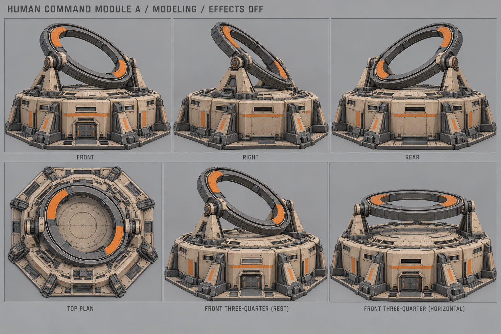
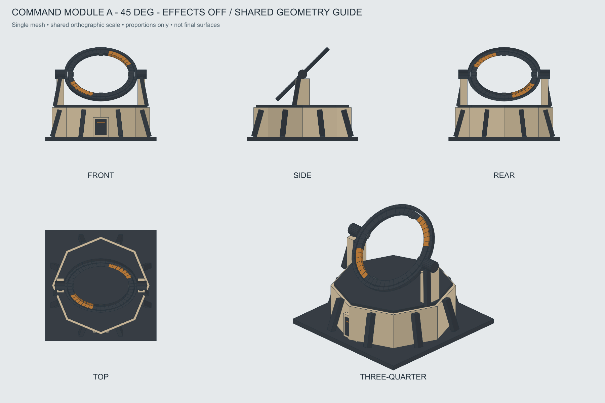
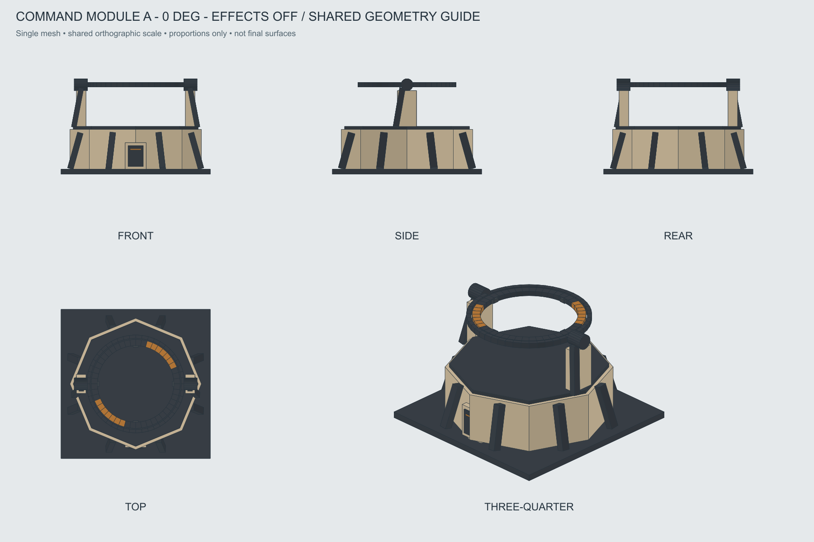

Командный модуль · A «Орбитальная рама»
Выбран с последовательностью: кольцо ложится горизонтально → внутренний ротор вращается → внутри проскакивают электрические дуги. Самостоятельное здание, рабочее пятно 3×3.
Паспорт · Движение и эффект · Входы для AI · OBJ покоя · OBJ горизонтальной позы · История A–H
Основной нейтральный вид
Внешняя наклонная обойма и внутренний ротор разделены кольцевым подшипником. Все эффекты выключены.

Художественные ракурсы и горизонтальная поза
Лист содержит перспективные неточности. Строгие проекции и положение частей — ниже.

Одна геометрия: наклонный покой

Та же геометрия: горизонтальная поза

Отдельное превью последовательности
Условный вид сверху: изменение масштаба эллипса иллюстрирует наклон, это не точная 3D-анимация. Внешняя обойма ложится горизонтально; внутри неё вращается ротор с оранжевыми метками. Дуги — отдельный эффект внутри проёма. Не передавать превью на текстурирование.
Отмена гасит дуги и запускает возврат к покою. Для возврата сначала выключаются дуги и останавливается ротор, затем обойма наклоняется обратно. Точный игровой триггер активности и тайминги ещё не выбраны: своей очереди у модуля нет.